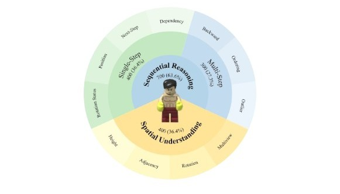
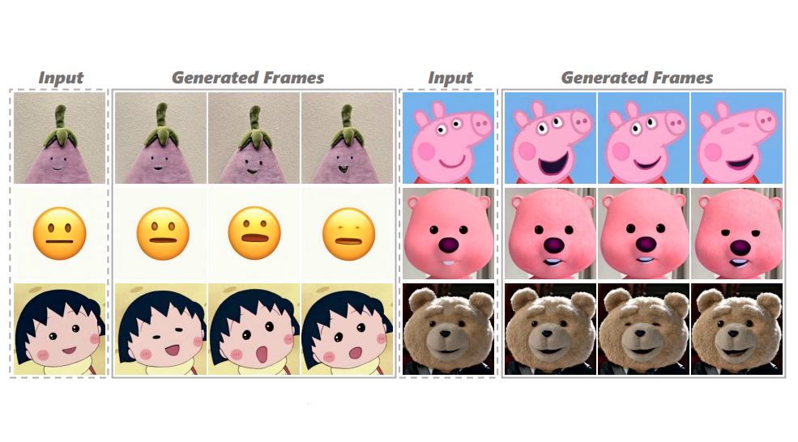
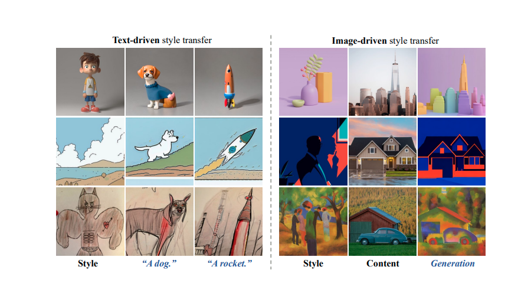
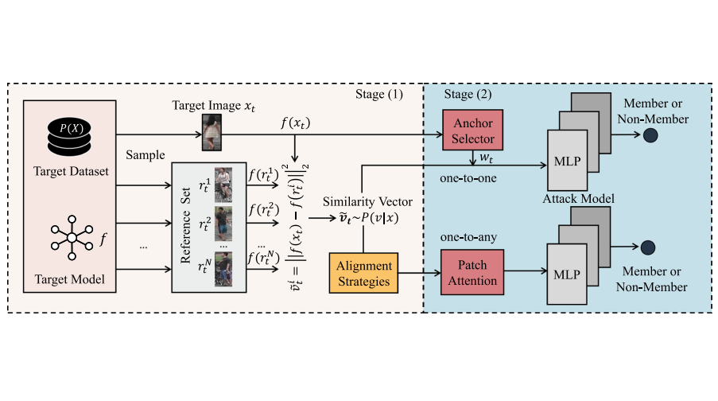
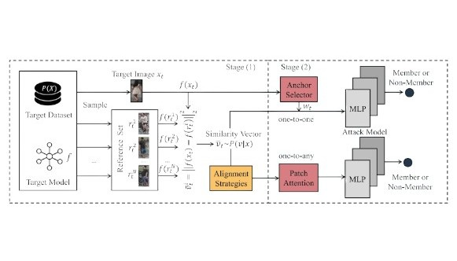

About
Education
Experiences
News
- I will AI Lab at Tencent (IP-Adapter Team) to begin my internship journey. It's great to see you in Shenzhen!
- One paper (MCDM) about long-term talkingface generation accepted to ICML 2025.
- We release LEGO-Puzzles, a new benchmark with 1,100 LEGO-based VQA tasks that evaluates MLLMs' ability to perform multi-step spatial reasoning.
- One paper (UniDD) about dataset distillation accepted to CVPR 2025 as the oral presentation.
- One paper (FaceShot) about portrait animation accepted to ICLR 2025.
- One paper (DiffPano) about panorama generation accepted to IJCV.
- We release StyleShot, a style transfer method capable of generating the high-quality stylized images that match the desired style from any reference image without test-time style-tuning.
- One paper (Re-ID leak) about MIA in Re-ID accepted to IJCV.
- One paper about fine-grained classification accepted to AAAI 2024.
- One paper (SDMIA) about MIA in Re-ID accepted to AAAI 2023 as the oral presentation.
Selected Publications

LEGO-Puzzles: How Good Are MLLMs at Multi-Step Spatial Reasoning?

FaceShot: Bring Any Character into Life

Styleshot: A Snapshot on Any Style

Re-ID-leak: Membership Inference Attacks Against Person Re-identification

Similarity distribution based membership inference attack on person re-identification